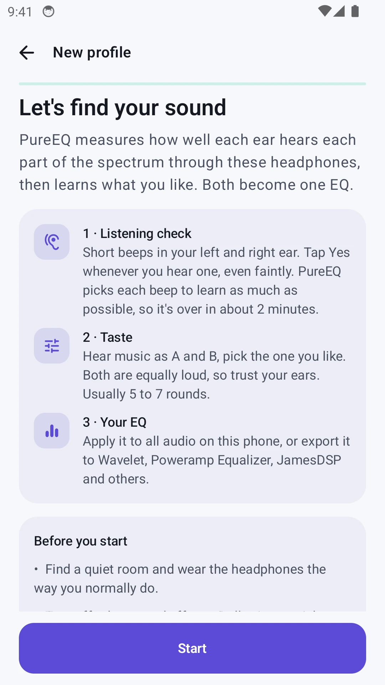

PureEQProduct story · 5 min read
Find a sound you can adjust and keep.
An Android sound-tuning app that combines a per-ear listening check, music preferences and editable EQ profiles.
Read the case study
Actual native welcome screen from an isolated Android emulator. It explains the two inputs before a profile is created.
View full size ↗01 The problem
How can sound tuning be guided without making its result feel final?
A row of equaliser sliders assumes that someone already knows which frequencies they want to change. I approached PureEQ as a guided starting point: explain the setup, gather a few listening responses, compare music and leave the result open to adjustment.
Designed for Android listener tuning a pair of headphones. Understand the inputs and retain control over the sound.
User context Design assumption
Looking for a guided starting point rather than editing frequency bands unaided.
- The friction
- A generated curve can look like an objective verdict.
- Design implication
- Explain the stages and keep comparison and reset close to adjustments.
Example situation · illustrative scenario. Imagine wanting clearer music but not knowing whether to change bass, treble or one particular band. A guided starting point needs to be understandable before the sliders become useful.
02 The direction
What shaped the design
Audibility and preference answer different questions. The flow should explain that difference and leave the suggestion open to revision.
Original project and interface captures · reviewed October 2026
My direction. I separated preparation, listening and taste, then kept comparison, adjustment and reset available around the result.
Process and product scope
I separated the listening check from the taste test. The first asks whether a short tone is audible through the current headphones; the second asks which of two music treatments the person prefers. Neither needs to be presented as an expert diagnosis.
Preparation is part of the flow: a quiet environment, suitable headphones, stable volume and a left/right check. The result can then be adjusted with named controls, compared with EQ off and saved as a profile.
Export gives the profile a useful life beyond the setup. The documented formats have different capabilities, so a combined curve or per-ear adjustment needs explanation. The captures show the actual native starting flow, not a completed hearing test or a clinical result.
- Per ear
- separate listening input
- A/B
- music preference choices
- Export
- take the profile elsewhere
- Prepare
Check headphones, environment, volume and channels.
- Listen and compare
Report tones, then choose between music treatments.
- Adjust and keep
Compare, fine-tune, save or export the profile.
03 Design decisions
The choices behind PureEQ
Open a decision to see the reasoning and trade-off.
01Explain the two kinds of input
Describe listening responses and music preferences as separate steps before asking for either.
Why this matters. A person should know whether they are reporting audibility or choosing a sound they like.
The trade-off. A short explanation must not make the listening check sound like a calibrated audiogram.
02Leave the suggestion editable
Offer named fine-tuning controls, an EQ on/off comparison and a way back to suggested settings.
Why this matters. The suggested curve is a starting point. People need to hear and revise it rather than accept it as an unquestionable result.
The trade-off. Several controls can become confusing together. Reset and suggested-value feedback need to make changes traceable.
03Carry context into export
Describe the target format and explain when an app combines left and right curves.
Why this matters. A technically valid export can still behave differently from the per-ear result shown in PureEQ.
The trade-off. Compatibility depends on the receiving app and device. Exporting a file does not guarantee the same playback everywhere.
04 The outcome
A guided suggestion that stays open to adjustment.
I connected preparation, listening responses, A/B choices and an editable result into a profile flow. The app can apply the EQ or export it for another player, with limitations explained for each format. This is personal sound tuning, not a clinical hearing assessment.

More about the experience
- Actual setup. The screenshots show preparation, not fabricated test results.
- Non-clinical scope. The personal tuning process is not a medical hearing assessment.
05 Reflection
The person should understand the suggestion well enough to change it.
I would test whether people can tell what came from their listening responses, what came from preference choices and what they changed afterwards. If those differences are unclear, the final curve may look more certain than it should.
What I would evaluate next proposed work
- complete setup with headphones, explain each stage and compare a saved result with EQ off at matched loudness.
- interrupted setup, a volume change, incorrect channel identification, resetting one adjustment and exporting a combined curve.
Familiar chess. Very different information.